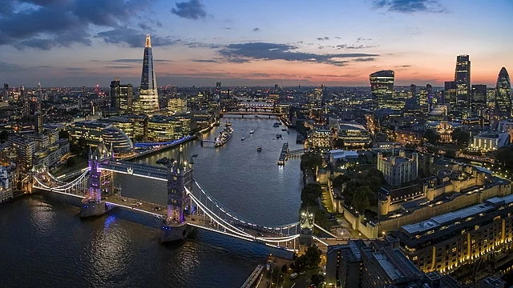

London
London je glavni grad Engleske i Ujedinjenog Kraljevstva.Danas je London jedna od devet regija Engleske
i administrativno područje Velikog Londona (Greater London), s vlastitim izabranim gradonačelnikom i skupštinom.
London je značajan "globalni grad" i jedno od najvećih svjetskih financijskih središta s najvećim bruto domaćim proizvodom u Europi.

Birmingham
Birmingham je drugi grad po broju stanovnika u Ujedinjenom Kraljevstvu i ekonomski stožer središnje Engleske.
Zajedno s predgrađima tvori golem urbani kompleks u kojemu su smještena metalurgijska i strojograđevna postrojenja.
Njima se pridružio cijeli niz postrojenja lake industrije (kemijska, prehrambena, tekstilna), te tercijarne djelatnosti.
Leeds
Leeds je grad u Zapadnom Yorkshiru u Ujedinjenom Kraljevstvu. Leeds je kulturno, gospodarsko i trgovačko središte aglomeracije
West Yorkshire koja je prema prema popisu stanovništva iz 2001. imala 1.5 milijuna stanovnika. Ako se izuzme London,
Leeds ima najrazvijeniji poslovni sektor, sektor pravnih i financijskih usluga u Velikoj Britaniji, a smatra se da je to grad
s najvišim stopama rasta gospodarstva i broja stanovnika.
Sheffild
Sheffield je grad u Engleskoj, u regiji Yorkshire i Humber i grofoviji Južni Yorkshire. Nazvan je po rijeci Sheaf koja protječe gradom.
Tijekom industrijske revolucije u 19. stoljeću postao je svjetski poznat po proizvodnji čelika (te i danas nosi nadimak Steel City – "Grad čelika"),
a u tom se razdoblju stanovništvo gotovo udesetorostručilo.Sheffield F.C., najstariji nogometni klub na svijetu, osnovan 24. listopada 1857.
Bradford
Bradford je grad u Engleskoj, u grofoviji Zapadni Yorkshire i regiji Yorkshire i Humber. Nalazi se 280 km sjeverno od Londona, u neposrednoj blizini Leedsa,
s kojim tvori treću po veličini urbanu zonu u Ujedinjenom Kraljevstvu, iza londonske i manchesterske.U 19. je stoljeću postao poznat kao središte tekstilne industrije,
posebice prerade vune. To ga je obilježilo u tolikoj mjeri da je dobio nadimak "svjetska prijestolnica vune".Bradford je postao značajna turistička destinacija,
između ostalog i prvi UNESCO-ov grad filma[2] s atrakcijama kao što su Nacionalni muzej medija u sklopu kojega je prvo IMAX kino u Europi
Liverpool
Liverpool je grad u sjeverozapadnoj Engleskoj, uz istočni dio estuarija rijeke Mersey. Liverpool je treći po veličini grad u Engleskoj i četvrti u Ujedinjenom Kraljevstvu.
Od 2004. godine, nekoliko gradskih spomenika bilo je upisano na UNESCO-ov popis mjesta svjetske baštine u Europi kao Pomorsko-trgovački grad Liverpool sve do 2012.
kada je upisan na popis ugroženih mjesta svjetske baštine zbog predložene izgradnje "Liverpool Waters", masivne rekonstrukcije povijesnih pristaništa sjeverno od centra grada.
Izabran je za glavni europski grad kulture, zajedno s norveškim Stavangerom, 2008. godine.